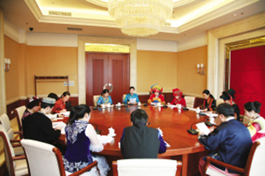

从十二大到十八大：特殊身份见证党和国家的政治进程
2015年12月11日 来源：《中国民族报》

正在备稿的全国“两会”民族语文同声传译人员
从1982年党的十二大起，中国民族语文翻译局就独立承担了全国党代会的翻译重任。2012年党的十八大召开，中国民族语文翻译局第7次承担这项任务。30年来，中国民族语文翻译局以特殊身份见证了党和国家的政治进程。
2012年11月，中国民族语文翻译局的同志第7次作为工作人员进驻全国党代会会场。每个人都心潮起伏，既激动又紧张，因为十八大不仅要选举产生新一届中共中央领导层，还将为今后中国发展指引方向。
在这次会上，民族语文翻译工作的主要任务有两项：一是用蒙古、藏、维吾尔、哈萨克、朝鲜、彝、壮等7种少数民族文字翻译、排版、印刷大会文件，以及向大会提供少数民族语言同声传译，十八大报告的全本、简本版、中纪委报告、党章（修正案）、党章（修正案）的说明、十八大报告新华社通稿等8种大会文件，合计46万余字；二是向中央人民广播电台和有关民族地区的新闻单位传送大会主要文件和新华社通稿译稿。
民族文译文能否准确地体现原文？译制完成的文件能否与汉文文件同步提供给代表？会场7个语种同声传译工作能否通顺流畅？向9个省、区党委宣传部传送的译稿能否准时快速？这一系列环节，都不容有丝毫的差错。
凡事预则立，不预则废。从9月12日十八大秘书处第一次筹备会议召开，翻译组便开始从人员、组织、设备、翻译和保密等各方面进行精心准备。经过33天的筹备，翻译组成为十八大秘书处各组中最早进入驻地的。
与一般文稿的翻译不同，党的全国代表大会的报告、党章修正案以及决议，必将成为建党立业、治国理政的方向与依据。翻译的准确与否，直接关系到少数民族党代表对大会文件的学习领会，直接关系到广大少数民族群众对大会精神的贯彻落实，直接影响到大会声音在民族地区的传播。
为此，翻译组的同志们一直在研究和学习。比如，在十八大报告中，此前常见的“全面建设小康社会”陈述改为“全面建成小康社会”，并提出到2020年实现全面建成小康社会的宏伟目标。对于某些民族语言而言，处理“建成”与“小康社会”的关系必须慎重。如朝鲜文中，“小康社会”一般不用“建成”来修饰，用“建设完成”也不够准，有的专家提出可否用“实现”的涵义来翻译，经向大会文件起草组质疑协商，文件起草组也同意在保证句子完整的前提下用“实现”的涵义来处理“建成”与句子其他成分的关系。
翻译过程中，类似这种质疑还有很多。比如，从“三位一体”到“五位一体”的翻译。对新增的“生态文明”一词，翻译组提出，希望大会文件起草组给出详细涵义，以便更准确地翻译。后来，大会文件起草组在党章（修正案）中，专门补充增加了一段有关生态文明内涵的文字，共计160余字。
通过这次大会翻译工作，中国民族语文翻译局不仅锻炼了队伍，而且让每位翻译人员都感到：在服务于党和国家的民族工作等方面，民族语文翻译工作不可或缺，大有作为！